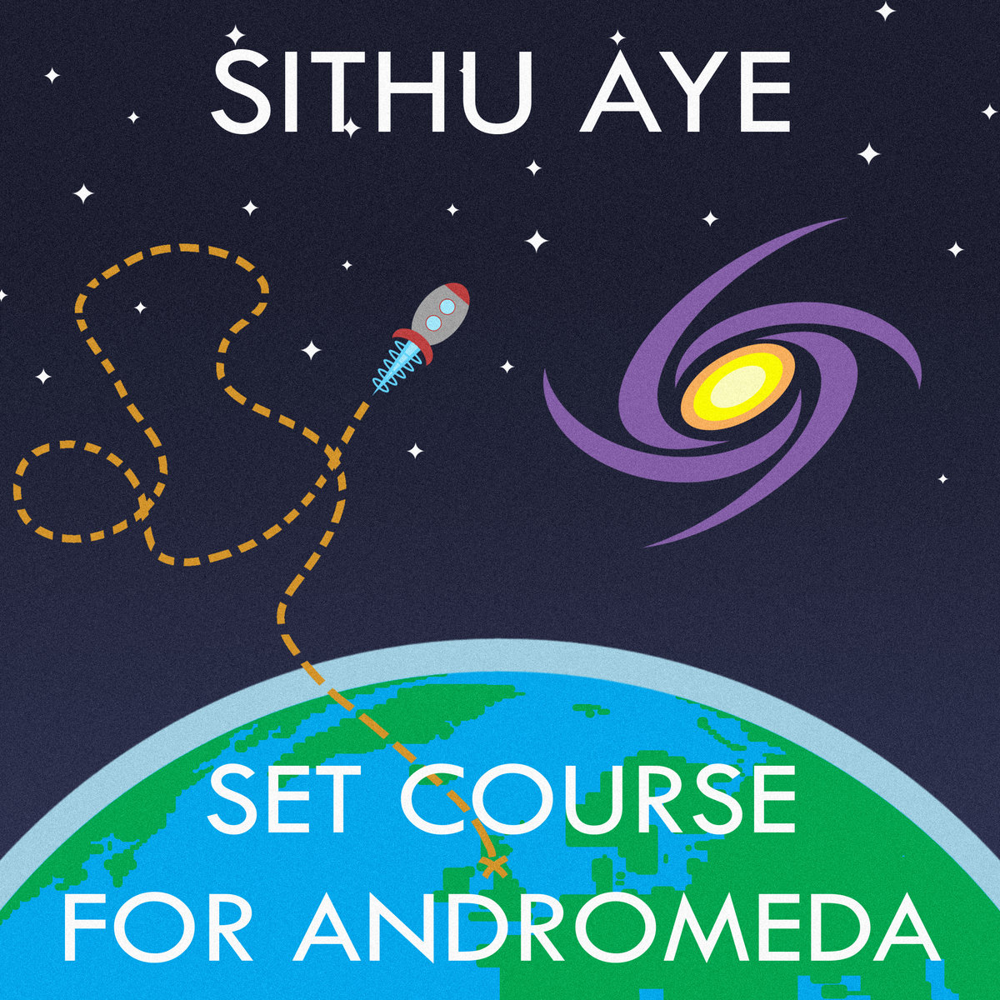

Invent the Universe (2012)
Track Listing
- Invent the Universe
- Grand Unification
- Expansion
- Baryogenesis
- Particles Collide
- Recombination
- Dark Ages
- Formation
- Pale Blue Dot

Set Course For Andromeda (2016)
Track Listing
- Space Cadet
- Set Course for Andromeda
- Constants and Variables
- Spiral
- Beyond the Boundary
- Transient Transistors
- ...We Actually Made It to Andromeda
- The Andromedan Pt I: A Single Step
- The Andromedan Pt II: Mystic Village
- The Andromedan Pt III: Trials of the Elements
- The Andromedan Pt IV: The Darkness Within
- The Andromedan Pt V: Rebirth
- The Andromedan Pt VI: Mother of Creation